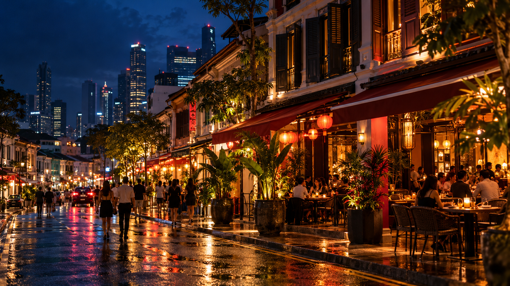
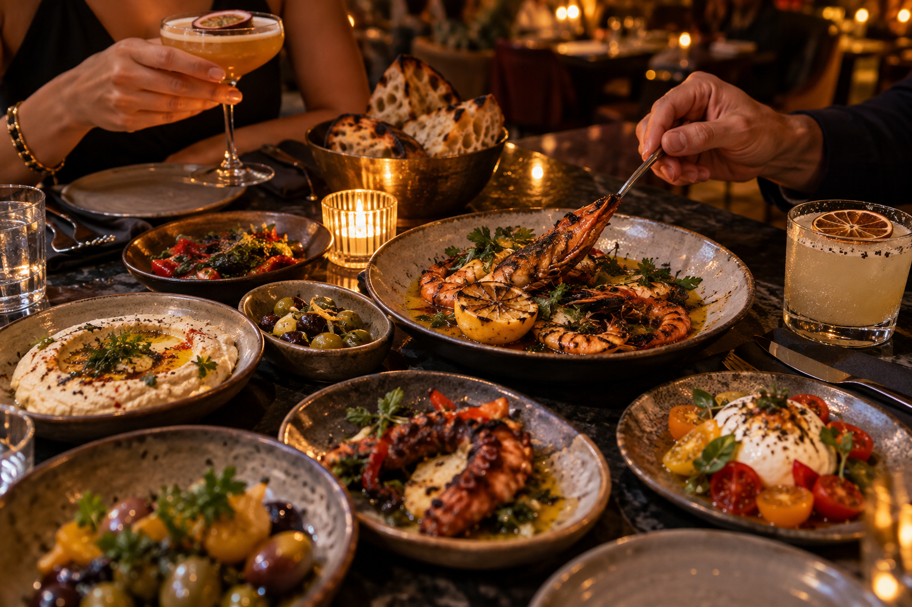

01
Late tables
Where to eat after 10pm around Tanjong Pagar
Korean grills, small plates and kitchens that keep the lights on when the sensible plans are over.
Night guide
Singapore, after dark
Dinner tables, bar seats and neighbourhood walks selected for the way the whole evening feels.
Explore the new guideThis week
Our editors look past the loudest openings to find places with atmosphere, generous food and a reason to stay for one more round.

The neighbourhood edit
From a lively Mediterranean room to a quiet counter made for lingering, these are the addresses that understand dinner is only part of the evening.
Read the guideLate tables
Korean grills, small plates and kitchens that keep the lights on when the sensible plans are over.
Night guideOne good night
A compact route through old shophouses, new kitchens and a bar with just the right final song.
ItineraryGood company
Go by neighbourhood
Our neighbourhood notes pair restaurants with the bars, walks and small detours that turn a booking into a full evening.
The shortlist
Teck Lim Road · Mediterranean / Balkan
A warm, high-energy dining room built around generous sharing plates, playful cocktails and nights that gather momentum.
Ji Teck Street · Italian
Handmade pasta, an intimate room and an easy wine-first rhythm that suits unhurried conversation.
Ann Siang Road · Pizza
Low lights, crisp-edged pies and a soundtrack with enough energy for an easy group dinner.
Duxton Hill · Modern Spanish
A compact counter for close-up cooking, lively small plates and a date that prefers action to ceremony.
Selections are editorial. Where a commercial relationship exists, we disclose it clearly in the relevant story.